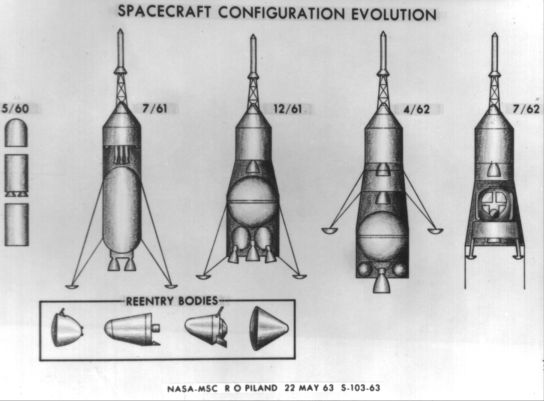
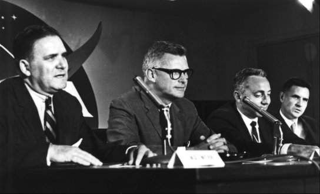
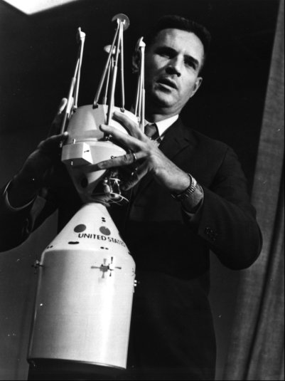

Von Braun's pronouncement in favor of lunar-orbit rendezvous, thus aligning his center with Gilruth's in Houston, signaled the accord that Holmes and Shea had so meticulously cultivated. Von Braun's conversion brought the two centers closer together, paving the way for effective cooperation. "It was a major element in the consolidation of NASA," Shea said.77
Thereafter, ratification of the mode question - the formal decision-making process and review by top management - followed almost as a matter of course. The Office of Systems began compiling information from the field center studies, adding the result of its own mode investigations. Shea and his staff also listened to briefings from several aerospace companies who had studied lunar rendezvous and the mission operations and hardware requirements for that approach. These firms, among them Douglas and a team from Grumman and RCA, believed that such work might enhance their chances of securing the additional hardware contracts that would follow a shift to lunar rendezvous.78
Shea's staff then compared the contending modes and prepared cost and schedule estimates for each. It appeared that lunar-orbit rendezvous should cost almost $1.5 billion less than either earth-orbit rendezvous or direct flight ($9.2 billion versus $10.6 billion) and would permit lunar landings six to eight months sooner.79
The Office of Systems issued the final version of the mode comparison at the end of July. This was the foundation upon which Holmes would defend his choice. Comparison of the modes revealed no significant technical problems; any of the modes could be developed with sufficient time and money, as von Braun had said. But there was a definite preferential ranking.
Lunar rendezvous, employing a single Saturn C-5, was the most advantageous, since it also permitted the use of a separate craft designed solely for the lunar landing. In contrast, earth rendezvous with Saturn C-5s had the least assurance of mission success and the greatest development complexity of all the modes. Direct flight with the Nova afforded greater mission capability but demanded development of launch vehicles far larger than the C-5. A scaled-down, two-man C-5 direct flight offered minimal performance margins and portended the greatest problems with equipment accessibility and checkout. Therefore, "the LOR mode is recommended as most suitable for the Manned Lunar Landing Mission."80
On 22 June, Shea and Holmes had presented their findings to the Management Council. After extended discussions, the council unanimously agreed that lunar-orbit rendezvous was the best mode. To underscore the solidarity within the manned space flight organization, all of the members decided to attend when Administrator Webb was briefed on the mode selection.81
First, however, Holmes and Shea informed Seamans of the decision. "By then," the Associate Administrator recalled, "I was thoroughly convinced myself, and everybody agreed on it." This was a technical decision that, from a general management position, he had refused to force upon the field organizations, even though he had long thought that lunar rendezvous was preferable.82
On 28 June, Webb listened to the briefing and to the recommendations of the Management Council. He agreed with what was said but wanted Dryden, who was in the hospital, to take part in the final decision. That night, Seamans, Holmes, and Shea called on Dryden in his sickroom. Dryden had opposed lunar rendezvous because of the risks he believed it entailed, but he, too, liked the unanimity within the council and within NASA and gave lunar-orbit rendezvous his blessing.83

Major configuration changes in the Apollo spacecraft from May 1960 to July 1962. The inset reentry bodies illustrate shapes that received the greatest amount of study.
Although acceptance of lunar rendezvous by the agency came before the end of June 1962, it was not announced until the second week in July. The delay was caused by outside pressure. PSAC, the President's Science Advisory Committee, headed by Jerome Wiesner, had developed an interest in NASA's launch vehicle planning and the mode selection for Apollo. Wiesner had formed a special group, the Space Vehicle Panel, to keep an eye on NASA's doings, and Nicholas Golovin, no longer with NASA, worked closely with this panel. Wiesner had hired Golovin for PSAC because of his familiarity with the internal workings of the agency and his knowledge of the country's space programs, both military and civilian. Golovin led a persistent and intensive review of Apollo planning that caused considerable turmoil within the agency and forced it into an almost interminable defense of its decision to use lunar rendezvous. Concurrently with Shea's drive for field center agreement, the PSAC panel was holding meetings in Huntsville and Houston, demanding that the two centers justify their stand on lunar-orbit rendezvous. The panel then insisted on meeting with Shea and his staff in Washington for further discussions.84
In a memorandum on 10 July, approved by both Webb and Dryden, Seamans officially informed Holmes that the decision on the Apollo mode had been approved. The Rubicon was crossed; Apollo was to proceed with lunar rendezvous. Immediate development of both the Saturn C-IB and a lunar excursion vehicle was also approved. Seamans added that "studies will be undertaken on an urgent basis" to determine the feasibility of earth-orbit rendezvous using the C-5 and a two-man capsule, one "designed, if possible, for direct ascent . . . as a backup mode."85

NASA announced selection of the lunar-orbit-rendezvous landing technique at an 11 July 1962 press conference. At the conference table, left to right above, are NASA Administrator James E. Webb, Associate Administrator Robert C. Seamans, Jr., Office of Manned Space Flight Director D. Brainerd Holmes, and OMSF Director of Systems Joseph F. Shea.
Webb, Seamans, Holmes, and Shea announced the selection of lunar-orbit rendezvous for Apollo at a news conference on 11 July 1962. Webb, perhaps as a concession to Wiesner, warned that the decision was still only tentative; during the forthcoming months, he added, the agency would solicit proposals for the lunar landing module from industry and would study them carefully before making a final decision. In the meantime, studies of other approaches would continue.
Holmes, however, struck a more definite note on the finality of the decision. Anything so complex, so expensive, as Apollo had to be studied at length, he said. "However, there is a balance between studying a program . . . and finally implementing it. There comes a point in time, and I think the point in time is now, when one must make a decision as to how to proceed, at least as the prime mode."
Webb concluded the press briefing:
We have studied the various possibilities for the earliest, safest mission . . . and have considered also the capability of these various modes . . . for giving us an increased total space capability.
We find that by adding one vehicle to those already under development, namely, the lunar excursion vehicle, we have an excellent opportunity to accomplish this mission with a shorter time span, with a saving of money, and with equal safety to any other modes.86

Shea uses models to demonstrate how the lunar module would dock with the command module.
Early the next morning, Holmes and Shea appeared before the House Committee on Science and Astronautics to explain NASA's seemingly abrupt abandonment of earth-orbit rendezvous. Holmes said, "It was quite apparent last fall this mission mode really had not been studied in enough depth to commit the tremendous resources involved, financial and technical, for the periods involved, without making . . . detailed system engineering studies to a much greater extent than had been possible previously." Nor had there been any agreement within the agency on any approach; "further study was necessary for that reason," as well. But investigations could go on forever, he added, and "at some point one must make a decision and say now we go. It has been really impossible for us to truly program manage [Apollo] until this primary mode decision had been made." Although several modes were workable, lunar-orbit rendezvous was "the most favorable one for us to undertake today." Equally important was the new rapport that had been achieved within the manned space flight organization "to get the whole team pulling together."87
"Essentially," Holmes told an American Rocket Society audience a week later, "we have now 'lifted off' and are on our way."88 But the PSAC challenge to NASA's choice still had to be dealt with before the decision became irreversible. While fending off this outside pressure, NASA had to keep North American moving on the command and service modules, watch MIT's work on the navigation and guidance system, and find a contractor for the lunar landing module.
77. Shea interview.
78. Bothmer, minutes of OMSF Staff Meeting, 8 June 1962; Hayes to Shea, "LOR briefings by Grumman, Chance-Vought and Douglas," 12 June 1962.
79. NASA OMSF, "Manned Lunar Landing Program Mode Comparison," 16 June 1962; addenda to "Manned Lunar Landing Program Mode Comparison," 23 June 1962.
80. NASA OMSF, "Manned Lunar Landing Program Mode Comparison," 30 July 1962.
81. Shea interview; Bothmer, minutes of 7th MSFMC meeting, 22 June 1962, pp. 2-3.
82. Seamans, interview, Washington, 11 July 1969.
83. Shea interview; Bothmer, OMSF Staff Meeting, 29 June 1962.
84. NASA, "NASA Outlines Apollo Plans," news release, 11 July 1962; President's Science Advisory Council panel, "Report of the Space Vehicle Panel," 3 Jan. 1962; Markley to Mgr. and Dep. Mgr., ASPO, "Trip report . . . to D.C. on 27 April 1962," 28 April 1962; Franklyn W. Phillips to Holmes et al., "Request for Contractor's Reports on Major NASA Projects," 22 May 1962; Bothmer, 7th MSFMC meeting, p. 5; Bothmer, OMSF staff Meeting, 29 June 1962.
85. Seamans to Dir., OMSF, "Recommendations of the Office of Manned Space Flight and the Management Council concerning the prime mission mode for manned lunar exploration," 10 July 1962. Gilruth wanted the Saturn C-1B (consisting of the C-1 booster and the S-IVB stage) for development testing and qualification of the command and service modules. The C-1 did not have the capability, and the C-V would be too expensive for such a mission. Frick to NASA Hq., Attn.: Holmes, "Recommendation that the S-IVB stage be phased into the C-1 program for Apollo earth orbital missions," 23 Feb. 1962; Gilruth to von Braun, "Saturn C-1B Launch Vehicle," 5 July 1962.
86. NASA, Lunar Orbit Rendezvous: News Conference on Apollo Plans at NASA Headquarters on July 11, 1962 (Washington, 1962), passim, but esp. pp. 7-9, 25, 30, 32.
87. House Committee on Science and Astronautics, NASA Lunar Orbit Rendezvous Decision: Hearing, 87th Cong., 2nd sess., 12 July 1962.
88. D. Brainerd Holmes, "Lunar Orbital Rendezvous for Apollo," paper presented to the American Rocket Society, Cleveland, Ohio, 17 July 1962; "NASA Outlines Apollo Plans," MSC Fact Sheet 20, n.d.